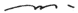
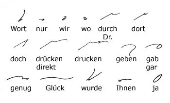

17.
The U Hook
The upper part of the
small elliptical circle represents, when standing alone, the U
in Wulst; with a dot beneath it, it represents the Ö
in Hölle; with a short dash, the U in Wut
or the UH in Ruhm.
The hook is always turned
on its side after N and M.
The hook is turned on
its side after K and G only when it is followed
by R or L. Thus in gucken and similar
words the hook retains its ordinary position: 
18.
Initial W is expressed not only by the consonantal stroke
(see Paragraph 11) but by the U hook.
The hook is used only
when the next consonant is a downstroke.
In all other cases the
stroke  is used.
is used.
Derivatives of vie
retain the primitive form.

The hook for W
is never used medially, and the stroke only when its use will not
mean two downstrokes in the outline; in the latter case W
is represented by a horizontal dash placed under the vowel immediately
following.
QU is the equivalent
of KW. In this combination the W is always
represented by the horizontal dash.
19. Expression of J
J is simply
the vowel I pronounced rapidly. In such words as Jubel
and Jodler the circle comes inside the hook, but where
the hook forms an angle with the succeeding consonant the circle
must lie right outside the hook:
The syllables JA
and JE (JÄ) are represented by large and
small loops respectively. (The writing of the final syllable
in Jammer will be demonstrated later.)
20. Expressing PF
When PF commences
a word or syllable or follows M, the P
is omitted. In all other cases the F is
omitted.
If it is particularly
desired to indicate the missing letter it is shown by a dot placed
after the P or before the F.
21. Expression of -tion
The endings TION,
SION, however variously pronounced, are rendered by the
SCH stroke. This also applies in such words as waschen,
Laschen.
The diminutive CHEN
is represented by the stroke CH.
The small circle is
used for the ending LICH. No ambiguity will ever
arise.
22. The UM Prefix
The U hook
represents the prefix UM when it is followed by a consonant;
otherwise the prefix is written in full.
23. Word-Signs

- Next Page -
|